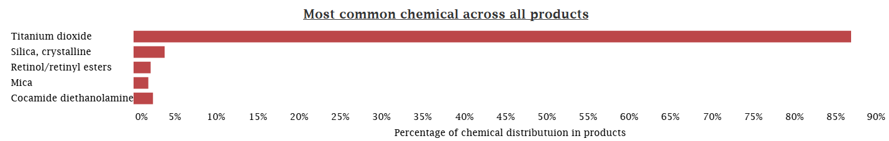
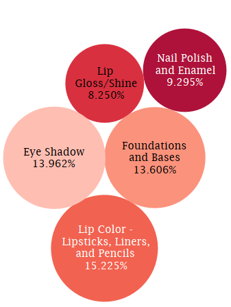
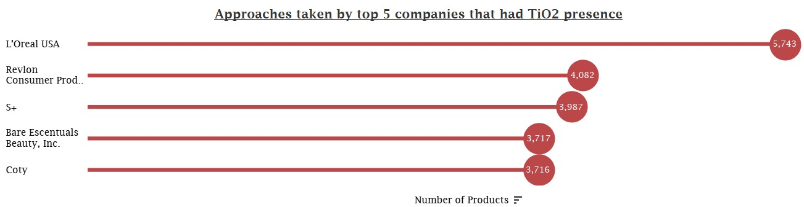
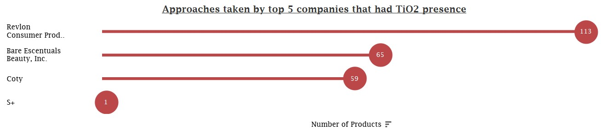

The California Safe Cosmetics Act of 2005, or Senate Bill 484, is a unique state law in California. It requires cosmetics manufacturers to label ingredients linked to cancer or birth defects. California is the only state enforcing such transparency. The California Safe Cosmetics Program (CSCP) gathers data on harmful ingredients in cosmetics, aiming to inform the public. This project analyzes CSCP data, revealing the presence of these chemicals, their distribution in products, and how companies respond to regulations.
86.84% of Cosmetics Contain This Ingredient. Should You Be Concerned?
TiO2, classified as a potential carcinogen by the International Agency for Research on Cancer, is present in 86.84% of cosmetics, as per data from the California Safe Cosmetics Program. Notably, Titanium dioxide nanoparticles do not appear to pose unique health risks and do not penetrate healthy skin. Research on sunburnt pig ears, designed to simulate damaged skin, showed that Titanium dioxide did not reach deeper skin layers.
 Lip Color, Eye Shadow, or Nail Polish: Where Is Titanium Dioxide Hiding?
The visualization reveals that Titanium dioxide (TiO2) is commonly found in Lip Color products, such as Lipsticks, Liners, and Pencils, with an average concentration of 15.22%. Additionally, TiO2 is present in Eye Shadow, Foundations & Bases, Nail Polish, and Lip Gloss. These insights highlight the widespread use of TiO2 in cosmetics, particularly in Lip Color formulations.
LOreal USA's Dominance
LOreal USA topped the list in terms of Titanium dioxide usage, with approximately 6.1% of their products containing TiO2. This significant presence of TiO2 in their cosmetics suggests that LOreal USA plays a substantial role in the utilization of this ingredient within the cosmetics industry. The other companies engaged in TiO2 production were Revlon, S+, Coty & Bare beauty essentials Inc. Delving deeper into the responses of these five companies regarding the reported presence of Titanium dioxide.
Reformulation or Discontinuation: How Do Brands Respond to Regulations?
In the analysis of how cosmetics brands respond to Titanium dioxide (TiO2) regulations, we found notable trends among the companies examined. Generally, most companies took little to no action regarding products containing TiO2. Only a handful of products underwent either reformulation, discontinuation, or a combination of both. LOreal USA's Static Approach: LOreal USA chose to maintain the status quo, without making any changes to their TiO2-containing products, distinguishing them from their peers. Revlon, Coty, and Bare Essentials: Focused on Discontinuation: Revlon, Coty, and Bare Essentials, on the other hand, leaned more towards discontinuation as their strategy to comply with regulations, demonstrating a comparative commitment to removing TiO2-containing products from their lines. S+'s Balanced Response: S+ stood out with a more balanced approach, involving both discontinuation and reformulation. Their commitment to a dual strategy indicates a comprehensive response to regulatory requirements. Revlon's Unique Reformulation: A unique instance was observed with Revlon, which not only reformulated but also discontinued a TiO2-containing product. However, this was an isolated case, unlike the general trend among other companies. These findings underscore the diverse strategies employed by cosmetics brands when responding to TiO2 regulations, highlighting the complexity of decision-making in the industry. Case : No Action Taken The figure below illustrates the quantity of products that include TiO2, and no alterations were implemented in this regard.  Case : Product Discontinued The diagram below displays the number of products containing TiO2 that were removed from the market by the companies.  Case : Product Reformulated The chart below illustrates the quantity of products that underwent reformulation, specifically those containing TiO2.
Summary
The cosmetics analysis project provides critical insights into the presence and management of Titanium dioxide (TiO2) in the cosmetics industry under the California Safe Cosmetics Act. I found that 86.84% of products contain TiO2, which, despite its potential carcinogenic classification, appears to pose minimal health risks through skin exposure. Companies responded to TiO2 regulations with varying strategies. LOreal USA maintained the status quo, while Revlon, Coty, and Bare Essentials predominantly chose discontinuation. S+ balanced both discontinuation and reformulation. Revlon, uniquely, applied reformulation and discontinuation to one product. This project highlights the complexity of cosmetics regulation and its impact on product formulation. It emphasizes the need for transparency and consumer awareness. These findings inform consumer choices and contribute to a safer cosmetics industry.